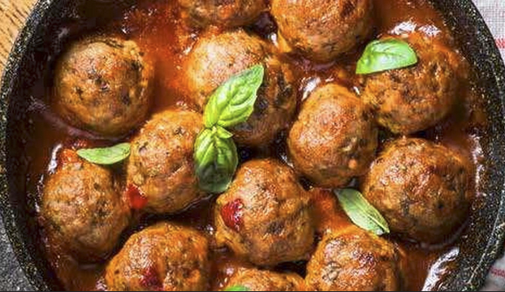

Balletjes in tomatensaus, da's wellicht één van de allerlekkerste
gerechten uit onze Vlaamse keuken. Voor de tomatensaus heb je wel heel
wat ingrediënten nodig, want alleen zo krijgt de saus heel veel smaak.
Dat is het geheim van een top-tomatensaus. Gehaktballetjes maken is
helemaal niet moeilijk, en als je de twee nadien samenbrengt in één pot
dan is het pas echt smullen geblazen! De balletjes smaken heel lekker
met bv. verse aardappelpuree, maar dat kunnen net zo goed frietjes of
rijst zijn. Dat beslis je zelf!
Ingredienten:
600 g rundergehakt
1 ui, fijngehakt
2 teentjes knoflook, fijngehakt
2 eieren
100 g chapelure (broodkruim)
2 takjes oregano, fijngehakt
20 g verse dragon, fijn gesneden
zeste van 1/2 citroen
125 g boter
Voor de saus:
50 g bloem
2 grote uien, fijngehakt
400 g champignons de Paris
2 Knorr bouillonblokjes vlees
200 ml passata
300 ml halfvolle melk
citroensap van 1/2 citroen

Bereidingswijze:
Meng het gehakt met de ui, knoflook, ei, broodkruim, de kruiden, de
citroenrasp en peper en zout naar smaak. Vorm er gelijke gelijke
balletjes van.
Laat 30 g boter bruin worden in de bakpan en bak de balletjes rondom
bruin. Schud de pan regelmatig zodat de balletjes mooi bruinen. Gaar
verder met de deksel op de pan.
Smelt voor de saus 40 g boter in een kookpan en stoof er de ui en de
champignons in aan. Haal de groenten uit de pan en doe er de rest van
de boter bij. Doe er de bloem bij en roer flink door met de klopper.
Maak een roux door daar nog de melk en 3 dl water door te roeren tot
een egale mengsel. Smelt er de bouillonketeltjes onder en werk af met
de tomatenpuree. Laat even doorkoken op een zacht vuur. Breng op smaak
met het citroensap en peper en zout en schep er de balletjes door.